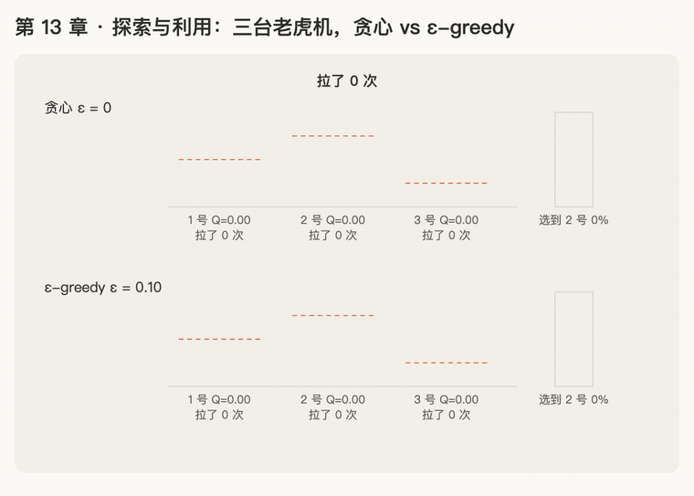
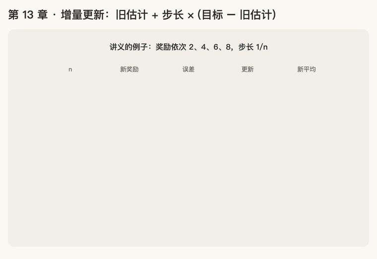

第 13 章 · 探索与利用：多臂老虎机与 ε-greedy
本地运行
git clone https://github.com/wikieden/rl-from-scratch
cd rl-from-scratch/code/notebooks
pip install jupyterlab torch numpy
jupyter lab ch13_bandit.ipynb也可以下载后直接用 VS Code 打开 .ipynb 运行。需要 GPU 的章节在 Colab 里选「代码执行程序 → 更改运行时类型 → GPU」。
本章回答：不知道环境的概率时，只能自己去试。总挑"目前看起来最好的"有什么问题？怎么在"试新的"和"用好的"之间平衡？怎么一边试一边更新平均值？
讲解日期：2026-11-13 · 上一章：第 12 章 价值迭代与 GPI · 下一章：第 14 章 蒙特卡洛
对应原文：Sutton & Barto §2.1–2.4（L2052–L2528：k 臂老虎机、样本平均式 2.1、贪心式 2.2、ε-greedy、增量公式 2.3–2.4）、§2.5–2.6（L2529–L2760：常数步长式 2.5、乐观初值）
本章缩写：ε：希腊字母 epsilon（读"伊普西龙"），探索的概率；\(Q_t(a)\)：Q 是 quality（质量），第 t 步时对动作 a 的价值估计；\(q_*(a)\)：动作 a 的真实价值；k-armed bandit：k 臂老虎机（bandit 原意"强盗"，老虎机外号"独臂强盗"）；α：希腊字母 alpha（读"阿尔法"），步长。全部缩写见 附录 · 缩写与术语表
讲解
第一步：最简单的强化学习：三台老虎机，只有一个状态（2026-11-13）
从这一章开始，智能体不知道环境的 p 了（第 12 章末尾），只能自己试。先看最简单的情况：只有一个状态，每次选一个动作，马上拿到奖励，然后重来。
类比：游戏厅里三台老虎机。 每台机器"平均吐多少"不一样，但你不知道。每拉一次，吐出来的数是随机的（这次 2.3，下次 0.7）。你有 1000 次机会，想让总收入最多。
这叫 k 臂老虎机问题 k-armed bandit（§2.1，L2052 起）。讲义里设 3 台机器，真实平均（\(q_*(a)\)，你不知道）是：
| 机器 | 1 | 2 | 3 |
|---|---|---|---|
| 真实平均 \(q_*(a)\) | 1.0 | 1.5 | 0.5 |
每次拉出来的奖励 = 真实平均 + 随机噪声（标准差 1，有时高有时低）。
估计价值：样本平均（式 2.1，L2151）：机器 a 的价值估计 \(Q_t(a)\) = 它到目前为止拉出来的奖励的平均（第 4 章第三步：多试几次取平均）。
一句话：老虎机是只有一个状态的 RL：不知道每台机器的真实平均，只能边拉边用样本平均去估。
第二步：只挑看起来最好的：贪心会被"第一印象"困住（2026-11-13）
最直接的做法：贪心 greedy（式 2.2，L2163–L2176）：每次都拉目前估计最高的那台：
问题出在哪：一开始三台估计都是 0。假设第一次随便拉了机器 1，吐出 1.2，于是 \(Q(1) = 1.2\)，另外两台还是 0。接下来贪心永远拉机器 1，因为它看起来最好；机器 2 其实更好（1.5），但一次都没试过，永远不知道。
用代码跑了 200 次实验，每次 1000 步：
| 策略 | 平均每步奖励 | 选到最好机器（2 号）的比例 |
|---|---|---|
| 贪心 | 1.105 | 21% |
只有 21% 的时间在拉最好的机器：大部分实验被"第一印象"困住了。
这就是"探索与利用"的矛盾（L2088–L2103）：
- 利用 exploit：拉目前看起来最好的，眼前收益最大；
- 探索 explore：拉看起来不怎么样的，眼前可能亏，但能发现更好的机器。
一次只能拉一台，没法同时探索和利用（L2101–L2103）。
类比：吃饭。 总去最常去的那家（利用），稳但可能错过更好吃的；偶尔试一家新的（探索），可能踩雷，但也可能发现新宠。
一句话：贪心只利用不探索，会被开头几次的运气困住；探索和利用不能同时做，要平衡。
第三步：ε-greedy：大部分时候贪心，偶尔随便试（2026-11-13）
最简单的平衡办法：ε-greedy（L2177–L2189）：
- 以概率 1 − ε：贪心，拉估计最高的；
- 以概率 ε：随便挑一台（每台等概率），不管估计。
ε 取 0.1，就是"十次里有一次随便试"。
| 策略 | 平均每步奖励 | 选到最好机器的比例 |
|---|---|---|
| 贪心（ε = 0） | 1.105 | 21% |
| ε-greedy（ε = 0.1） | 1.426 | 89% |
只拿出 10% 的机会去乱试，就几乎总能找到最好的机器，收入也高了很多。
为什么有效（L2186–L2189）：因为每台机器都会被一直试下去，次数越来越多，每台的估计 \(Q(a)\) 都会越来越接近真实值 \(q_*(a)\)，贪心那部分自然就挑中了真正最好的。
代价：永远有 10% 的时间在乱拉，即使早就知道哪台最好。所以 89% 不是 100%。（实践中常让 ε 随时间慢慢变小。）
这个办法后面一直在用：第 16 章的 SARSA、Q-learning，第 18 章的 DQN，选动作都是 ε-greedy。
一句话：ε-greedy = 1 − ε 的时间贪心、ε 的时间随便试；10% 的探索就能把找到最好机器的比例从 21% 拉到 89%。
第四步：增量更新：新平均 = 旧平均 + 步长 × (新奖励 − 旧平均)（2026-11-13）
问题：样本平均要把所有拉过的奖励都存起来再求平均吗？拉 100 万次就要存 100 万个数。
不用。每来一个新奖励，在旧平均上"改一点"就行（式 2.3，L2476–L2481）：
一个个符号读：
- \(Q_n\)：前 n − 1 个奖励的平均（旧估计）；
- \(R_n\)：第 n 个奖励（新来的）；
- \(R_n - Q_n\)：新奖励比旧估计高了多少（误差）；
- \(\frac1n\)：改多少：误差的 n 分之一。
用数字验证：奖励依次是 2、4、6、8。
| n | 新奖励 \(R_n\) | 误差 \(R_n - Q_n\) | 更新 | 新平均 |
|---|---|---|---|---|
| 1 | 2 | 2 − 0 = 2 | 0 + 2/1 | 2 |
| 2 | 4 | 4 − 2 = 2 | 2 + 2/2 | 3 |
| 3 | 6 | 6 − 3 = 3 | 3 + 3/3 | 4 |
| 4 | 8 | 8 − 4 = 4 | 4 + 4/4 | 5 |
最后 5 = (2 + 4 + 6 + 8) / 4 ✓，但只需要记住"当前平均"和"拉了几次"两个数。
通用形式（式 2.4，L2487–L2495）：
这是全书最常见的一个句式，后面每一章都会出现，只是"目标"和"步长"换了：
| 章 | 目标 | 步长 |
|---|---|---|
| 本章 | 这次的奖励 \(R_n\) | \(\frac1n\) 或常数 α |
| 第 14 章 MC | 整局的回报 \(G_t\) | α |
| 第 15 章 TD | \(R + \gamma V(S')\) | α |
| 第 16 章 Q-learning | \(R + \gamma \max_a Q(S', a)\) | α |
常数步长 α（§2.5，式 2.5，L2548）：如果机器的真实平均会慢慢变，最近的奖励更有参考价值，就把 \(\frac1n\) 换成一个固定的 α（比如 0.1）：新奖励永远占 10% 的分量，越老的奖励影响越小。
一句话：增量更新 = 旧估计 + 步长 × (目标 − 旧估计)；步长 \(\frac1n\) 就是真平均，常数 α 更看重最近的；这个句式贯穿全书。
动画演示：三台老虎机，贪心 vs ε-greedy

可交互版：animations/l13-bandit.html（要能点按钮、拖滑块，需要用本地服务打开，见 animations/README.md"跑起来看"）。
怎么看：
- 上下两排各三台机器：上排贪心，下排 ε-greedy（ε = 0.1）；虚线是真实平均（智能体看不见），实柱是当前估计 \(Q(a)\)；
- 每帧两边各拉一次，被拉的那台闪一下，估计按第四步更新；
- 贪心那排常常一直拉同一台、2 号估计停在 0（第二步）；ε-greedy 那排每台都被试过，2 号慢慢胜出（第三步）；
- 滑块调 ε，看"选到最好机器的比例"怎么变；换一个随机种子再看贪心会不会被困住。
动画演示 2：增量更新：1/n 和常数 α（第四步）

可交互版：animations/l13b-incremental.html（滑块调常数步长 α）
怎么看：
- 前 4 帧就是第四步的表：2、4、6、8 依次进来，每次只往新奖励挪"误差 ÷ n"，最后得到 5。
- 后面是一台会变的机器（编的）：前 100 次平均 1，之后平均 3。蓝线是 1/n，越往后挪得越少，追不上；橙线是常数 α，很快追到 3。
- α 调大追得更快，但线也更抖：这就是"更看重最近的奖励"的代价。
练习与作答记录
题 1：ε = 0.2、有 4 台机器时，贪心那台被选中的概率是多少？（提示：随便试的那 0.2 里也可能抽到它。）
作答：（待作答）
题 2：用增量公式依次更新奖励 10、0、5（从 \(Q_1 = 0\)、n 从 1 开始），写出每一步的 \(Q\)，最后检查是不是等于三个数的平均。
作答：（待作答）
题 3：用自己的话说：为什么贪心策略会"被第一印象困住"？ε-greedy 怎么解决的？
作答：（待作答）
口诀
不知道 p 就去试；只挑最好会被第一印象困住；
利用拿眼前，探索找更好，一次只能做一样；
ε-greedy：九成贪心一成乱试；
新估计 = 旧估计 + 步长 × (目标 − 旧估计)，全书都是这句话。
本章复习卡片
- R22（探索 vs 利用；ε-greedy 怎么选动作；为什么贪心会被困住）
- R23（增量更新式 2.3、2.4：新 = 旧 + 步长 × (目标 − 旧)；\(\frac1n\) 与常数 α）
附录 · 延伸阅读
留给以后深入学习用，不影响本章主线。★ 是建议先读的。L 行号指
materials/text/books/sutton-barto-RLbook2020.txt。
推荐阅读
| 读什么 | 读哪里 | 读它为了什么 |
|---|---|---|
| ★ Sutton & Barto §2.1–2.2 | L2052–L2195（式 2.1、2.2、ε-greedy） | 本章第一到三步 |
| Sutton & Barto §2.3 | L2196–L2383（10 臂测试台，图 2.2） | 书里的实验：ε = 0、0.01、0.1 的对比曲线 |
| ★ Sutton & Barto §2.4 | L2384–L2528（式 2.3、2.4） | 增量公式和"目标 − 旧估计"的通用句式 |
| Sutton & Barto §2.5–2.6 | L2529–L2760（式 2.5，乐观初值 L2670 起） | 常数步长；把初值设高也能鼓励探索 |
| Sutton & Barto §2.7 UCB | L2782 起 | 更聪明的探索：优先试"试得少的" |
| Hands-on-RL 第 2 章 | chinese/Hands-on-RL/第2章-多臂老虎机问题.ipynb |
中文：ε-greedy、UCB、Thompson 采样的代码 |
数学原理
- 增量公式的推导：\(Q_{n+1} = \frac1n\sum_{i=1}^{n} R_i = \frac1n[R_n + (n-1)Q_n] = Q_n + \frac1n[R_n - Q_n]\)（L2430–L2480）。
- 常数步长是指数加权平均：\(Q_{n+1} = (1-\alpha)^n Q_1 + \sum_{i=1}^{n}\alpha(1-\alpha)^{n-i}R_i\)（式 2.6，L2560–L2596），越旧的奖励权重越小。
- 收敛条件（式 2.7，L2612–L2640）：步长序列满足 \(\sum \alpha_n = \infty\) 且 \(\sum \alpha_n^2 < \infty\) 时估计收敛到真值；\(\frac1n\) 满足，常数 α 不满足（一直在抖，但能跟上变化）。
- ε-greedy 的选择概率：贪心动作被选中的概率 = \(1 - \varepsilon + \frac{\varepsilon}{k}\)，其他每个动作 \(\frac{\varepsilon}{k}\)。
公式清单
| 公式 | 意思 |
|---|---|
| \(Q_t(a) = \frac{\text{a 拿到的奖励之和}}{\text{a 被拉的次数}}\) | 样本平均（式 2.1） |
| \(A_t = \arg\max_a Q_t(a)\) | 贪心（式 2.2） |
| 以 1 − ε 贪心，以 ε 随机 | ε-greedy |
| \(Q_{n+1} = Q_n + \frac1n[R_n - Q_n]\) | 增量平均（式 2.3） |
| 新 = 旧 + 步长 × (目标 − 旧) | 通用更新句式（式 2.4） |
| \(Q_{n+1} = Q_n + \alpha[R_n - Q_n]\) | 常数步长（式 2.5） |
代码对照：把本章的数字用代码算一遍
代码在
cs285-deep-rl/solutions/chapter-code/ch13_bandit.py，测试tests/test_ch10_16.py。
同一章的 Jupyter notebook：cs285-deep-rl/solutions/chapter-code/notebooks/ch13_bandit.ipynb（讲解和代码放在一起，一格一格边读边跑；代码都写在格子里，Colab 也能直接打开）。
bash cd cs285-deep-rl/solutions/chapter-code uv run python ch13_bandit.py
| 讲义 | 代码 | 跑出来 |
|---|---|---|
| 增量平均 | incremental_mean([2, 4, 6, 8]) |
[2.0, 3.0, 4.0, 5.0] |
| 贪心，200 次实验 × 1000 步 | run_bandit(0.0, seed=s) |
每步 1.105，最好机器 21% |
| ε-greedy | run_bandit(0.1, seed=s) |
每步 1.426，最好机器 89% |
关键几行：
a = rng.integers(len(means)) if rng.random() < eps else int(np.argmax(Q)) # ε-greedy
N[a] += 1
Q[a] += (r - Q[a]) / N[a] # 增量平均
代码里才看得到的：np.argmax 遇到并列时总是返回编号最小的那个，所以全 0 时贪心第一次一定拉 1 号机器，后面就可能一直困在 1 号。更公平的做法是在并列的里面随机挑（第 16 章的代码就是这样写的）。
自己改一改（不影响练习答案）：
- 换 ε 跑 200 次实验：ε = 0.01 → 每步 1.306、最好机器 61%；ε = 0.1 → 1.426、89%；ε = 0.5 → 1.246、66%。试太少学不到，试太多又浪费，中间最好。
- 把
steps改成 5000，再比一次 ε = 0.01 和 ε = 0.1，看谁追上来了。